Batería y autonomía operativa
Guía de consulta basada en el manual original. Las páginas del PDF se abren en otra pestaña y las capturas pueden consultarse sin perder tu lugar.
PÁGINA 14 Batería
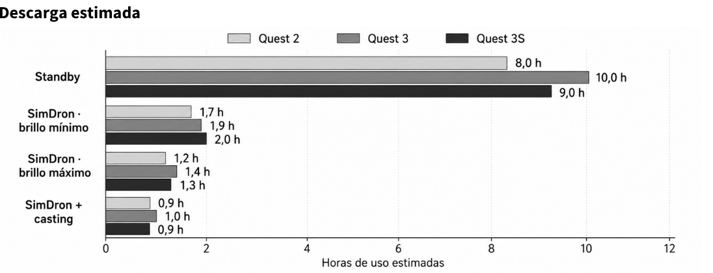
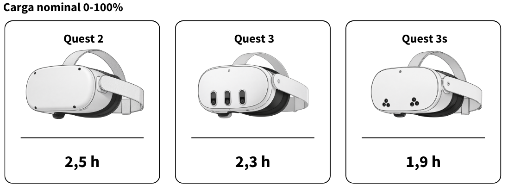
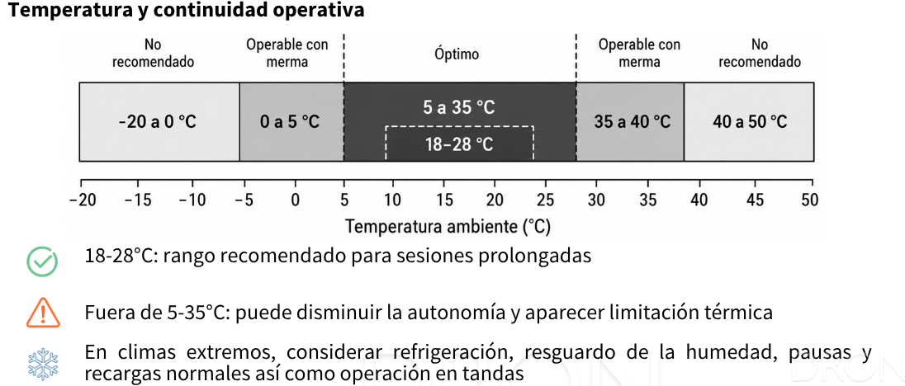
Ver recorte anterior de la página (referencia)
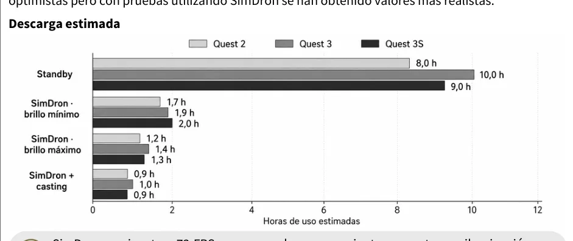
Batería
CICLO DE CARGA Y DESCARGA OPERATIVO ESTIMADO
Estimaciones operativas para SimDron. Los valores oficiales de autonomía suelen ser más optimistas pero con pruebas utilizando SimDron se han obtenido valores más realistas.
Descarga estimada
SimDron se ejecuta a 72 FPS y su carga de procesamiento aumenta con iluminación en tiempo real, sesiones prolongadas, temperatura y casting
Carga nominal 0-100%
Quest 2
Quest 3
Quest 3s
2,5 h
2,3 h
1,9 h
Tiempo nominal de referencia con cargador adecuado La autonomía real depende del escenario de uso
Temperatura y continuidad operativa
18-28°C: rango recomendado para sesiones prolongadas
Fuera de 5-35°C: puede disminuir la autonomía y aparecer limitación térmica En climas extremos, considerar refrigeración, resguardo de la humedad, pausas y recargas normales así como operación en tandas
PÁGINA 15 Ciclo operativo con baterías extendidas para Meta Quest 3s
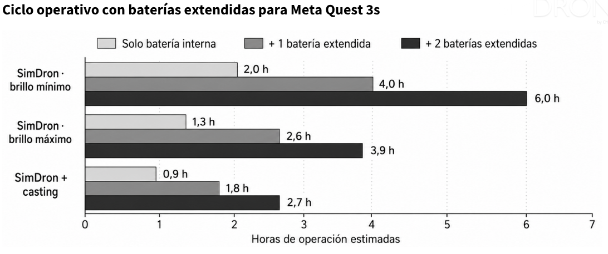
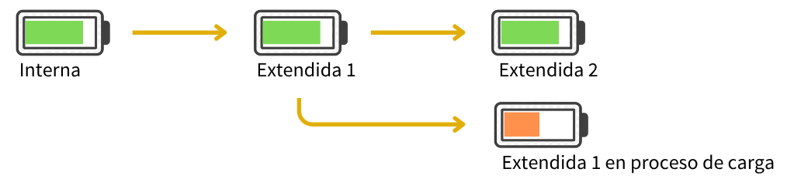
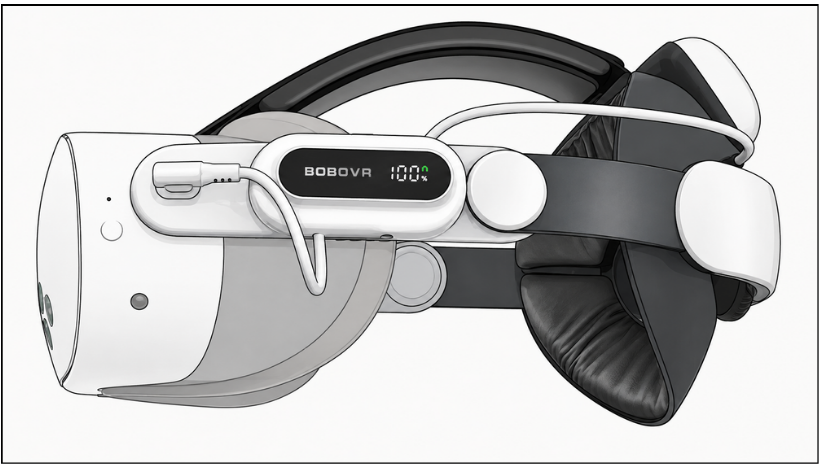
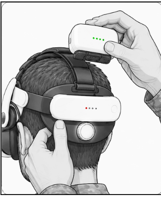
Ver recorte anterior de la página (referencia)
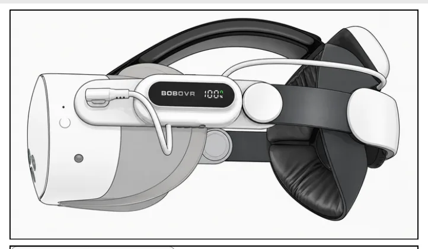
Ciclo operativo con baterías extendidas para Meta Quest 3s
Interna Extendida 1 Extendida 2
Extendida 1 en proceso de carga
Recomendación operativa: para clases prolongadas o sesiones con casting, conviene un strap de batería extendida con al menos 1 batería adicional El strap con baterías extraíbles además permite una colocación más rápida y representa una mejora sustancial en la ergonomía aunque ocupa un tamaño mayor para su almacenamiento.
PÁGINA 16 Topología
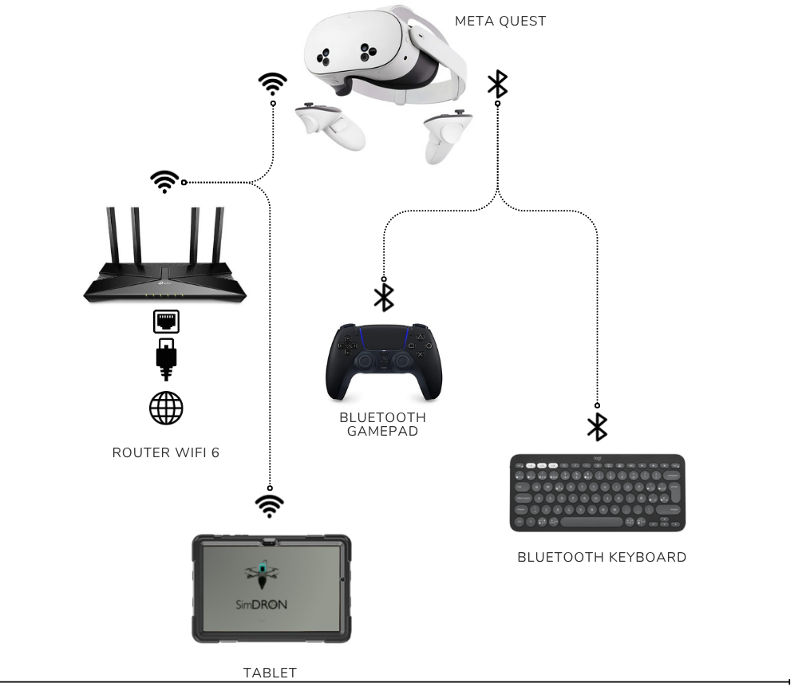
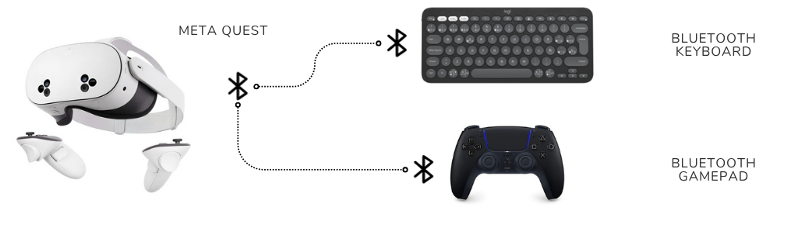
Topología
SimDron es un software de aplicación tipo Stand Alone, es decir, que se ejecuta en el propio HMD (Head Mounted Display) Meta Quest que contiene su propio sistema operativo Meta Horizon OS sin necesidad de un dispositivo externo, siendo almacenado en el Internal Flash Storage (SSD) y actualizado mediante un canal de distribución de forma automática a través de internet. Tiene la capacidad de conectar redes inalámbricas WiFi y periféricos mediante Bluetooth. Es posible realizar la transmisión en tiempo real al dispositivo tablet conectando el wifi del router.
CON TRANSMISIÓN EN TIEMPO REAL A TRAVÉS DE INTERNET + META HORIZON
META QUEST
BLUETOOTH
GAMEPAD
ROUTER WIFI 6
BLUETOOTH KEYBOARD
TABLET
SIN TRANSMISIÓN REQUERIDA
META QUEST BLUETOOTH
KEYBOARD
BLUETOOTH
GAMEPAD